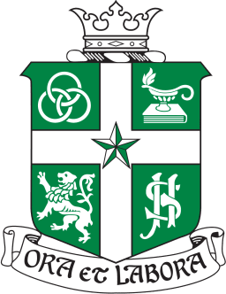

Awards
 St Joseph's Institution
The Computer Science Subject Prize Winner (2020)
Awarded to the top performing student of the cohort for academic excellence and exceptional attitude for the subject.
The Music Subject Prize Nominee (2020)
Awarded to the top three performing students of the cohort for academic excellence and exceptional attitude for the subject.
 Ministry of Home Affairs
Ministry of Home Affairs
Public Spiritedness Award (2017)
Awarded due to heroic bravery in public service.